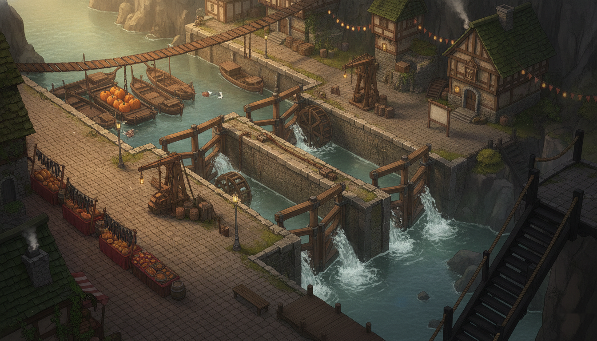
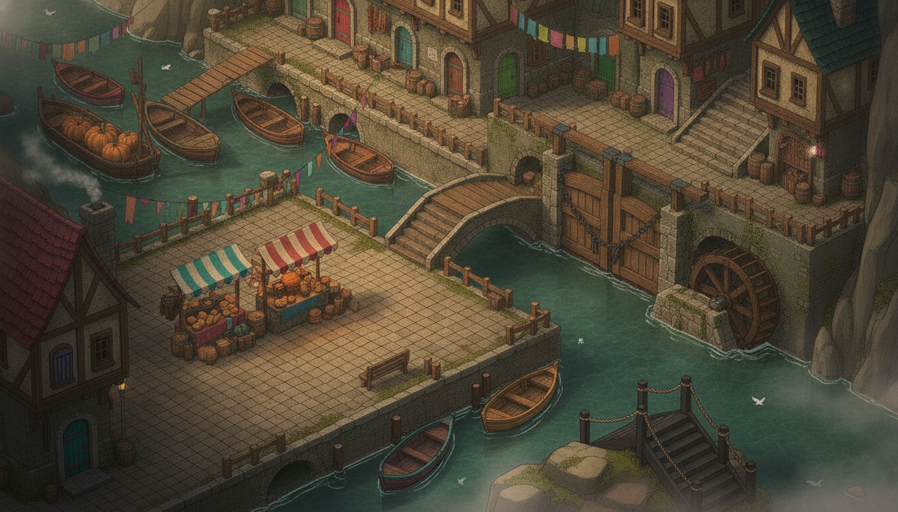
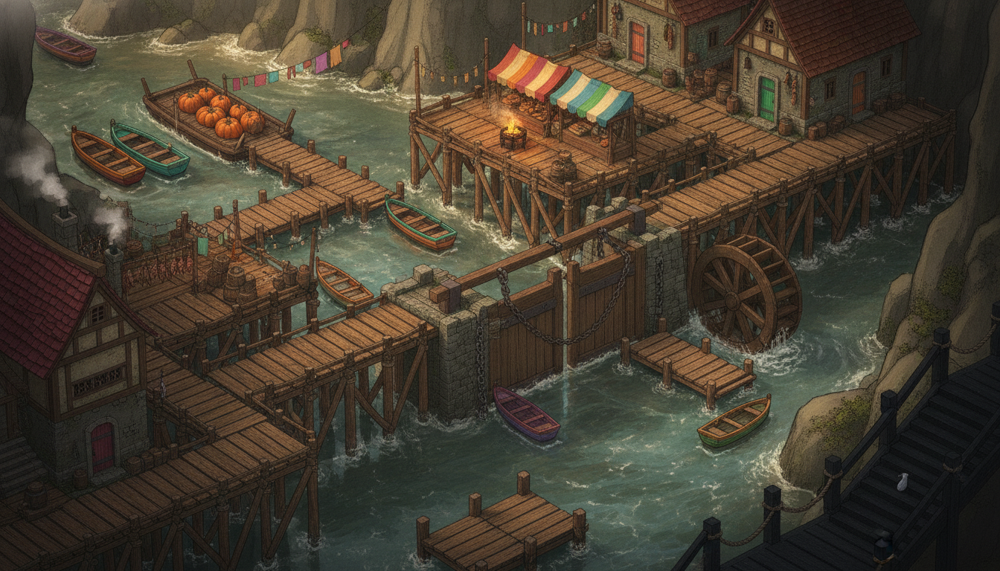
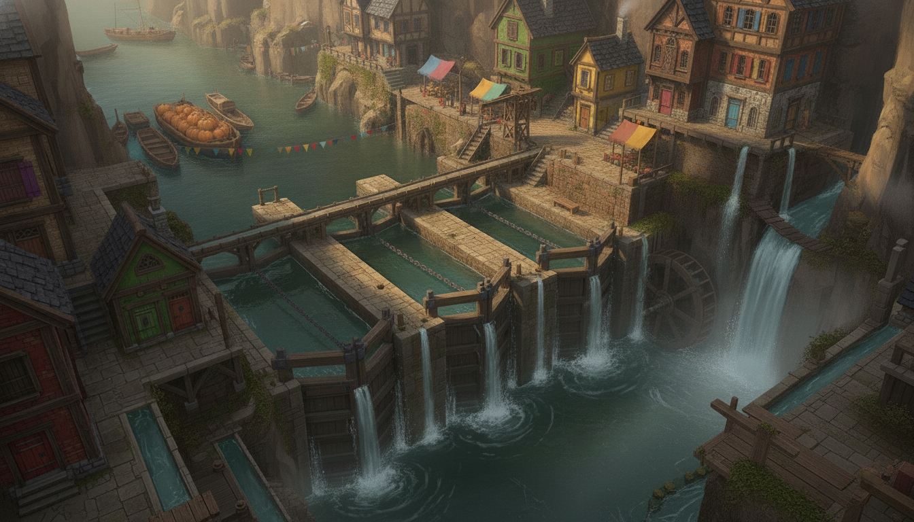

Dellhollow main-town rework — director's choice
Three candidate reinterpretations of the town painting under the new thesis: not a town
beside water infrastructure but a town made of water — channels, piles, and races interleaved
with the buildings themselves. No masks or engine staging yet; POIs will be re-staged around the chosen
painting. Click any image to zoom. Rolls parked in assets/scenes/dellhollow/candidates/.
Current (for comparison)

current —
dellhollow/main.png. The painting being replaced. Verdict it drew: beautiful, but the town sits on pavement
next to the locks — quay on one side, water on the other, and never the twain. The three candidates below
each dissolve that boundary a different way.
Candidate A — the canal town (water as streets)

candidate A —
Venice-meets-gorge: the houses rise sheer from the water, canals duck under them through arched tunnels, a humpback
bridge steps over the main channel, and boats moor at doorsteps. The rafted queue and pumpkin barge read clearly
upper-left; a chained lock gate with its waterwheel holds the right edge; the black-timber deep-stairs sit on their
own outcrop lower-right; and the bench at the quay's dock edge is already the night-scene set — water on three
sides, bollard posts, lantern reach. Stages well: the market beats (that big quay is the most generous
walkable stage of the three), the night dock scene (best of the three), the jam. Stages poorly:
only one lock is painted and its balance beams / chalk tally beam don't read — the tally-beam
beat would need the near gate timber to carry it; no distinct guildhall (row houses only); the least radical of the
three — the quay still gives it a "dry town core" that softens the thesis.
Candidate B — the stilt town (wood over water)

candidate B —
Fishing-village Dellhollow: every lane is a boardwalk on tarred piles, the current visibly churns under the
town's floor everywhere, decks overhang the water, drying-fish racks and nets dress the rails, and each house keeps
a painted boat at a private jetty. The pumpkin barge and rafted queue anchor upper-left; the market deck with its
chestnut brazier and loud awnings is the town's living room; a chained lock gate and waterwheel span mid-right; the
black stair drops away lower-right. Stages well: the supper-deck beat (the overhanging decks ARE the beat),
the jam (boats crowd every jetty), any scene that wants the river audible underfoot — this is the strongest literal
water-interleaving of the three. Stages poorly: no readable guildhall (the big house
upper-right is modest); the night dock scene has no bench — it would stage on the low jetty lower-center instead;
one lock only, tally beam not painted; and the near-total absence of stone may flatten the contrast with lockfive's
black-timber chamber below.
Candidate C — the cascade town (the locks as spine)

candidate C —
The gorge keeps its verticality and the water pours THROUGH the town: three lock chambers step down the middle of
the frame as the town's spine, spillways sheet off every terrace, a waterwheel turns behind the falls, side-flumes
thread the lower-left, and the stacked houses answer with the loudest facades of the three (green, yellow, oxblood,
blue shutters). The stopped queue and pumpkin barge wait in the pool above the locks — cause and effect in
one glance, which no other candidate manages. Deep-stairs lower-right descend beside the falling water; bunting and
laundry stitch the gorge. Stages well: the arrival read-aloud, the chart/tally beat (lockhead terrace with
bench, right where Beat 3 wants it), the jam, and "the way down" — the locks falling into the lower pool make the
descent a promise the whole painting keeps. Stages poorly: the camera sits higher and
farther than the family's other paintings, so characters will stage smaller; walkable ground is fragmented terraces
(the eventual mask will be the hardest of the three); the night dock scene has only a small lockhead bench, no cozy
quay edge; the market is the smallest of the three. A few sub-10px stall shapes on the upper terraces could read as
figures at full zoom — flag for a touch-up pass if C is chosen.